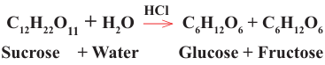

27
Student’s Book - Form Two

Biology for Secondary Schools
Disaccharides dissolve in water and form
sweet solutions. Some disaccharides, for
example maltose and lactose can reduce
copper (II) ions (Cu2+) to copper (I) ions
(Cu+) like monosaccharides. These
are also called reducing sugars. Other
disaccharides such as sucrose cannot
reduce copper (II) ions to copper (I) ions.
These are called non-reducing sugars.
Therefore, non-reducing sugars cannot
be tested directly by Benedict’s solution.
Instead, it is first converted to reducing sugar by using hydrochloric acid (HCl)
in the process called hydrolysis, as
shown in the following example:
C12H22O11 + H2O

C6H12O6 + C6H12O6
Sucrose + Water Glucose + Fructose
HCl
The acidic mixture is heated and left to cool. It is then neutralised by using sodium hydroxide (NaOH) or sodium bicarbonate (NaHCO3) for the
Benedict’s solution to work properly.
Thereafter, steps for testing reducing sugars is carried out.
Activity 1.5: Test for non-reducing sugars in sugarcane
Materials
Benedict’s solution, hydrochloric acid, sodium hydroxide solution or
sodium bicarbonate solution, a piece of
sugarcane, a knife, mortar and pestle,
test tubes, test tube holder, heat source,
water, filter funnel, dropper, measuring
cylinder (10 mL), beakers, and test tube
brush
Procedure
1.
Peel the piece of sugarcane and
cut it into smaller pieces using a knife.
2.
Grind the pieces of sugarcane using
mortar and pestle and add a small
amount of water to make a mixture.
3.
Decant and filter the mixture to
obtain a solution.
4.
Pour 2 mL of a sample solution
into the clean and dry test tube.
5.
Add 1mL of dilute hydrochloric
acid.
Safety precautions
Avoid flammable substances near the
heating source. Burners should be
placed on the bench, never held in the
hands. Use a test tube holder to hold the
test tube. Heat the test tube at the top of
the solution, not at the bottom where gas
bubbles can cause an explosion. Ensure
proper ventilation for heating safely.
6.
Gently heat the mixture for 2-3
minutes.
7.
Cool the mixture. Then add 2 mL
of sodium bicarbonate solution or
sodium hydroxide solution.
8.
Add 2 mL of Benedict’s solution to
the cooled mixture and heat gently.
9.
Record the series of colour change
occurring.
08/04/2026 10:18:12